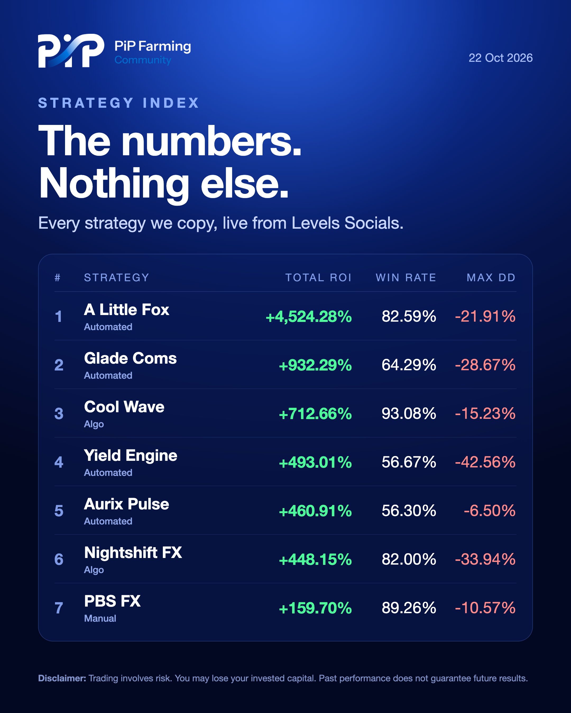
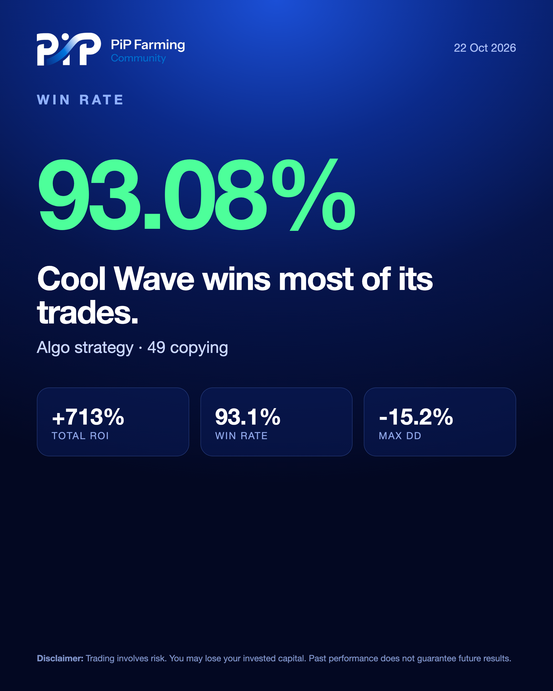

Live results from Levels Socials, turned into clean posts and published every day. No manual work.
| 13:00 · Hype | One strategy, one number. Rotates between best win rate, strongest month, lowest drawdown and most trades. |
| 19:00 · Results | The full Strategy Index: total ROI, win rate and max drawdown for every active strategy. |
| Comments | Every post opens a discussion in the PipFarming Community group, so people talk about the results in one place. |

Results · the daily Strategy Index

Hype · one strategy, one number